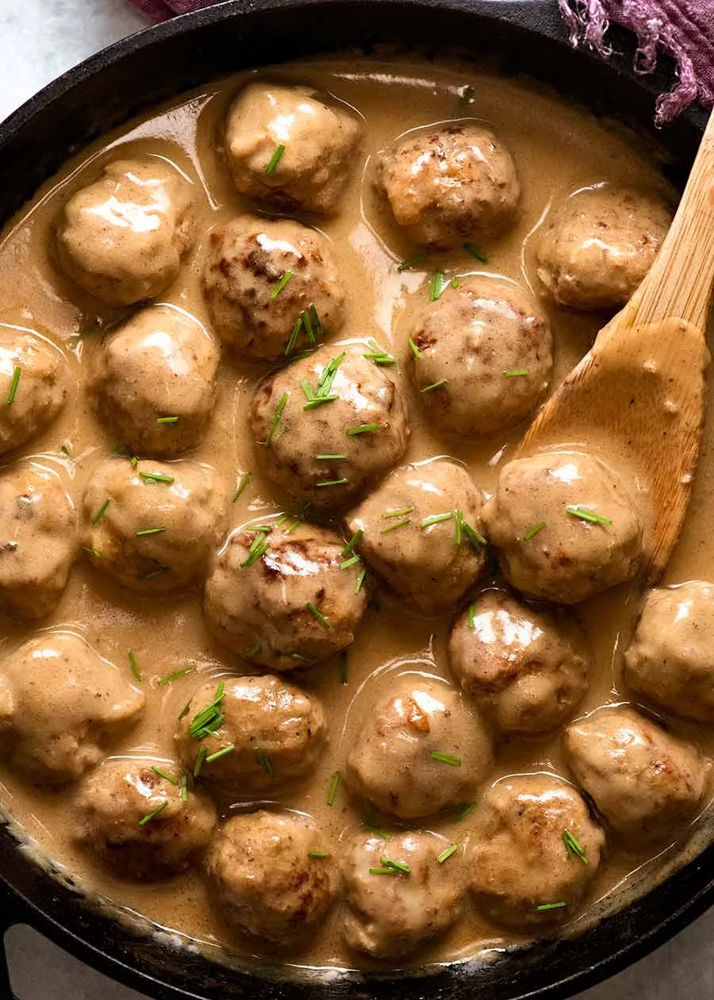

приготовление:
-
Соединить 500 г говяжьего фарша и 250 г свиного фарша, хорошо размять руками, чтобы разбить комочки. Добавить 1 мелко нарезанную луковицу, 1 измельчённый зубчик чеснока, 100 г панировочных сухарей, 1 яйцо и 5 ст. л. цельного молока. Добавить соль и чёрный перец, тщательно перемешать.
-
Сформировать небольшие круглые тефтели, выложить на чистую тарелку и накрыть. Убрать в холодильник на 2 часа: так они будут лучше держать форму во время приготовления.
-
Разогреть духовку до 180 °C без конвекции или до 160 °C с конвекцией. Разогреть в сковороде небольшое количество растительного масла. Выложить тефтели и аккуратно обжарить со всех сторон до румяной корочки.
-
Переложить обжаренные тефтели в жаропрочную форму, накрыть и запекать 30 минут.
-
Для соуса растопить в кастрюле 40 г сливочного масла. Всыпать 40 г пшеничной муки и, постоянно помешивая венчиком, готовить 2 минуты. Постепенно влить 150 мл овощного бульона и 150 мл говяжьего бульона, продолжая перемешивать.
-
Добавить 150 мл жирных сливок, 2 ч. л. соевого соуса и 1 ч. л. дижонской горчицы. Довести соус до слабого кипения и готовить, помешивая, пока он не загустеет.
-
Переложить готовые тефтели в сливочный соус и аккуратно перемешать. Подавать с картофельным пюре или небольшим отварным картофелем.